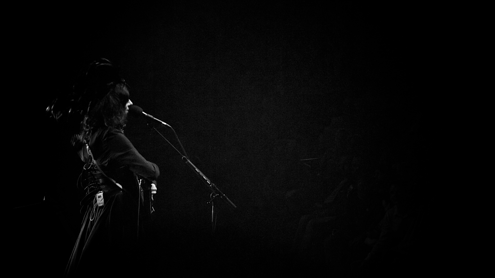

She uses clothes the way she uses a character: to meet the world when the person underneath cannot, or should not, be the story.
Born 1969, Corscombe, Dorset · 1991– · filed Sunday 16 August 2026
The person
Polly Jean Harvey is a Dorset songwriter, guitarist, and the only artist to win the Mercury Prize twice. She was bound for sculpture school and Central Saint Martins; the body stayed the object. Visual collaborator across most eras: Maria Mochnacz. Costume collaborators appear later — Annie Mochnacz, Ann Demeulemeester, Todd Lynn.
The 1995 look was a mask she built because she had no self left to show. The 2011 look was armour so she could walk onstage and report a war. Both are costume as protection, not costume as brand. She has called the Patti Smith comparison lazy journalism — treat that as a dismissal of a critic habit, not a denial that she later wore Ann Demeulemeester.
The work
Dry (1992) and Rid of Me (1993) are the raw first records: black knit, combat boots, the dress as a charged garment — the first single is literally “Dress.” To Bring You My Love (1995) is the mask she named Joan Crawford on acid. Is This Desire? (1998) retreats. Stories from the City, Stories from the Sea (2000) wins the first Mercury. Uh Huh Her (2004), White Chalk (2007), Let England Shake (2011) — the second Mercury, the war record — The Hope Six Demolition Project (2016), I Inside the Old Year Dying (2023).
For Let England Shake she was reading Harold Pinter’s political essays, seeing Jez Butterworth’s Jerusalem, looking at Goya’s Disasters of War. She told the BBC’s Andrew Marr she did not feel qualified to sing from a political standpoint and would not preach. She kept finding official war artists and poets, “but I couldn’t find the officially appointed war songwriter anywhere.”
Why the look existed
She uses clothes the way she uses a character: to meet the world when the person underneath cannot, or should not, be the story.
“I enjoy looking like a tart and thinking like a politician.”
“I’ve always been attracted by that combination of strength, beauty and vulnerability – and crossing that drag queen line! Obviously, when I play bigger stages I want to give a very strong image, and that comes from wearing a lot of make-up. I would never want to do something that was glamorous and beautiful, full stop, because that would be wrong for what I am doing musically.”
“That was kind of a mask. It was much more of a mask than I’ve ever had. I was very lost as a person, at that point. I had no sense of self left at all.”
“The belt that I wore, it was like a shield of armor. A lot of Ann’s clothes are very protective. There is a lot of closing over in the chest part, and that’s what gives you strength to meet the world or to present to the world whatever it is you are putting out there.”
Not church-raised. To Bust she said her mother taught that nature came from God; they weren’t baptized. She does read the Bible in phases. To David Fricke, Rolling Stone, 28 December 1995: “Why take a trip on acid when you can read the Bible?” Childhood records: John Lee Hooker, Howlin’ Wolf, Robert Johnson, Hendrix, Beefheart. A secondary-school rebellion into Duran Duran, Spandau Ballet, Soft Cell.
The clothes
1992
Dry
Body as manifesto before fashion-as-costume. Industry panic; she kept the cover.
Garments
Black knit, black leggings, Dr. Martens — the pre-1995 baseline. On stage, dresses: halter, sweetheart mini, leopard. 1992 NME cover (Maria Mochnacz): topless, back to camera, unshaven armpit.
Designer / season
none / unsourced. No designer on the NME cover.
Where it lives
NME / Getty. Not freely downloadable. Closest local file is the 1993 Academy still (Rid of Me year).
Last year of the tried-and-true goth kit, and the dress as weapon.
Garments
Dark charcoal/black halter-neck dress, deep V, fine all-over shimmer (lurex/glitter knit). Gretsch orange hollow-body. Album cover: nude, wet hair, Maria Mochnacz’s bathroom — Island objected; she kept it.
Joan Crawford on acid, her name for it. A mask, she later said, because she was very lost as a person. Worn-on-body stills are Getty; the object is in the V&A. No legitimate official Glastonbury 1995 upload was verified for embed — BBC archive exists, fan YouTube does not go in this file.
Garments
Hot-pink full-length neoprene catsuit, funnel neck, long sleeves, centre-front zip, worn unzipped to the bust over a black bra. Blue eyeshadow to the brow, fake lashes, red lipstick.
Designer / season
none listed. Do not invent one. V&A object record lists no designer.
Where it lives
V&A accession S.158-2021. Polly Harvey Archive, given by the artist. Material: machine-sewn neoprene. Also worn on the 1995 festival circuit (i-D: Torhout/Werchter).
That image became the nightly stage dress. The garment can be cheap if the makeup and wig do the work.
Garments
Flowing dark wig, falsies, red lipstick, slinky red strappy nightgown. High heels in water.
Designer / season
none / unsourced. Not a runway piece. Maria Mochnacz to Uncut: Harvey asked for “something red and strappy”; Mochnacz bought a nightgown at TK Maxx in Bristol.
Where it lives
Official video, dir. Maria Mochnacz. Restored on YouTube; also on pjharvey.net.
PJ Harvey — Down by the Water, official video (dir. Maria Mochnacz). Verified on pjharvey.net. · PJ Harvey / Island · source
2 December 1998
Is This Desire? — Cologne
Retreat from the mask. A woman becoming reacquainted with herself (Hooligan).
Garments
Sleeveless dark top, thin spaghetti strap, messy dark hair, handheld mic. Bettie Page bangs, light-handed makeup.
PJ Harvey, Cologne, 2 Dec 1998. · Mika Väisänen / Wikimedia Commons · source
2000–2001
Stories from the City — lingerie as outerwear / Todd Lynn
City-slicker monochrome, and the first named designer collaboration that is not a house season.
Garments
Reading 2001: black balconette + leather mini (i-D). Roskilde 2001: thin-strap bra/bikini top + high-waisted skirt. This Is Love / Tate: white leather suit, fringe sleeves — first Todd Lynn outfit, 2001, “tailored leather Elvis jacket with fringes” (Harvey to Vulture, 2023).
Designer / season
Lingerie looks: none / unsourced. Leather suit: Todd Lynn, 2001 — not a numbered seasonal RTW citation.
Where it lives
Roskilde local (low-res). This Is Love stills: i-D / Getty.
Early-00s alt, legs as the protagonist, colour allowed again.
Garments
Glastonbury: top + skirt printed with Spice Girls faces. T in the Park / Eurockéennes: her own merch slashed into tube-dress looks. Jersey minis, tube tops, leather pumps, upcycled band T-shirts. Annie Mochnacz begins making jewellery and clothing for the tour.
Designer / season
none — upcycled/printed merch. No designer.
Where it lives
Getty / i-D / Dazed. No local 2004 file. Do not use the 2007 lyrics dress as Uh Huh Her.
English Victorian Gothic. Do not invent a designer beyond Annie Mochnacz. Do not use this dress as Let England Shake.
Garments
Cream/off-white governess dress, leg-of-mutton sleeves, handwritten/embroidered lyric script from “Grow Grow Grow” and “The Devil,” distressed finish. Built from second-hand materials, adapted from late-18th-century patterns.
Designer / season
Annie Mochnacz. No commercial season.
Where it lives
V&A (mannequin) and Royal Festival Hall 2007 (worn onstage). Local files.
RFH London 2007. Same lyric / leg-of-mutton system worn onstage. · Wikimedia Commons · source
2011
Let England Shake — shield of armor
She needed armor. The belt was a shield. First meeting with AD: 1995, backstage in Belgium; AD gave her a black leather coat.
Garments
Ann Demeulemeester tour wardrobe: long black or white dress + wide leather corset-belt. Feathered headdress (white/grey or black) — Victorian mourning plume, not carnival. Autoharp. Mercury Prize 2011: feathered headdress, corseted gown, black leather boots, all AD (i-D).
Designer / season
Ann Demeulemeester tour wardrobe (house credit; do not invent a numbered season for the custom pieces).
Where it lives
Coachella, Roskilde, Royal Albert Hall — local files. Mercury stills: Getty / i-D.
Roskilde 2011. White high-neck, feather crown, autoharp. · Wikimedia Commons

Royal Albert Hall, 31 Oct 2011. Wide laced leather shield belt, black feather headpiece. · Wikimedia Commons
2016
The Hope Six Demolition Project
Patti adjacency is the point. Uniform, not a hero garment. Do not use Primavera as White Chalk.
Garments
Citizen-journalist uniform: all-black / navy, slim blazers, long unkempt hair. Feathers persist as remnant. Primavera: dark clothes, small pale hair ornaments. Down The Rabbit Hole: ensemble in dark monochrome, three vertical white spots.
Designer / season
Designer not sourced for Primavera — do not invent.
Down The Rabbit Hole 2016. System shot — uniform, not a hero garment. · Wikimedia Commons
2023
I Inside the Old Year Dying
Forest / Dorset / Orlam. Cheap material left visible — skeletal process. Safety pin as process, not punk costume.
Garments
Sleeveless floor-length off-white/cream paneled dress (Amsterdam). Tiny Desk: draped dress “the wintry color of a gray alder tree.” Drawing dress: spare Todd Lynn base; one drawing by Polly or a band member before each city. 55 drawings / 55 cities / 71 shows.
Designer / season
Todd Lynn tour dress (house credit; not a numbered RTW season).
Amsterdam 2023. Todd Lynn tour dress, Firebird, single spotlight. · Wikimedia Commons · sourcePJ Harvey: Tiny Desk Concert — official NPR Music upload. Grey-alder Todd Lynn dress. · NPR Music · source
2003
Big Day Out — customised denim battle set (added 19 Oct 2026 digest)
The V&A reads it as a biker “battle jacket” — studs and patches that announce your club or band, a code punk and metal took over. Her club is just Polly.
Garments
Chocolate-brown denim waistcoat and hotpants with yellow topstitching, covered in studs, charms, earrings, coins, fur, beads and stones, plus Jimi Hendrix and Motörhead badges. A black bra sewn in; a dog-collar medal reads “My name is Polly.” Worn at Big Day Out, Australia, 2003, and again for a Mary McCartney shoot in 2004.
Designer / season
Made by Clare MacTaggart (V&A maker credit). Not a commercial season.
Where it lives
V&A S.162-2021. Polly Harvey Archive. Local files.
Uh Huh Her — Rid of Me merch tube dresses (added 19 Oct 2026 digest)
Fan merch remade into stagewear for a record she produced herself, playing every instrument except the final drums.
Garments
Tube dresses cut from her own yellow Rid of Me merch T-shirts; the cut-off sleeves became arm warmers. One prints her face. The other prints the leopard-coat photo with “HEY I’M ONE BIG QUEEN” sprayed on the wall behind her.
Designer / season
Designed by Maria Mochnacz, made by Clare MacTaggart. Upcycled merch, no commercial season.
Where it lives
V&A S.163-2021 (face dress) and S.164-2021 (One Big Queen dress). Local file for S.163-2021.


.jpg){kind=link}